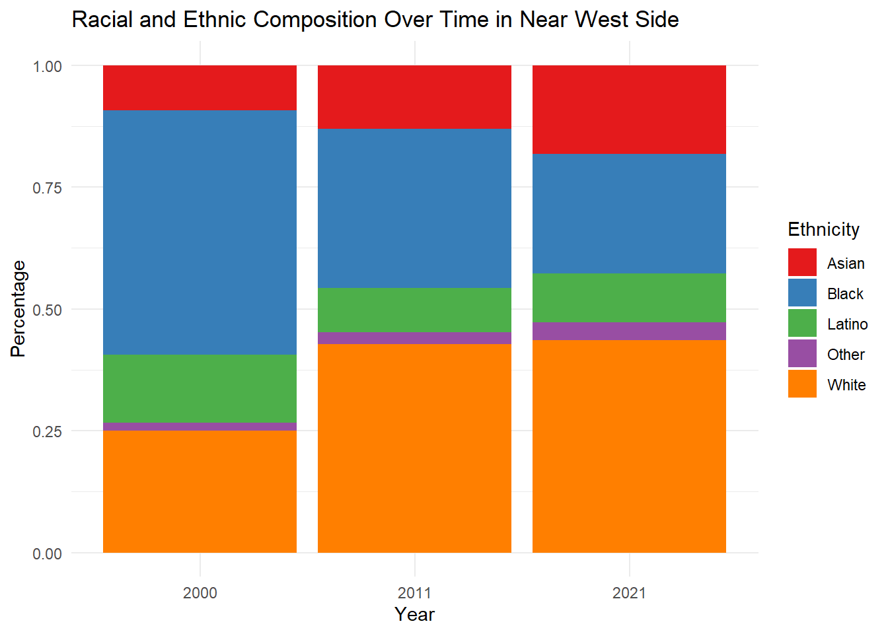
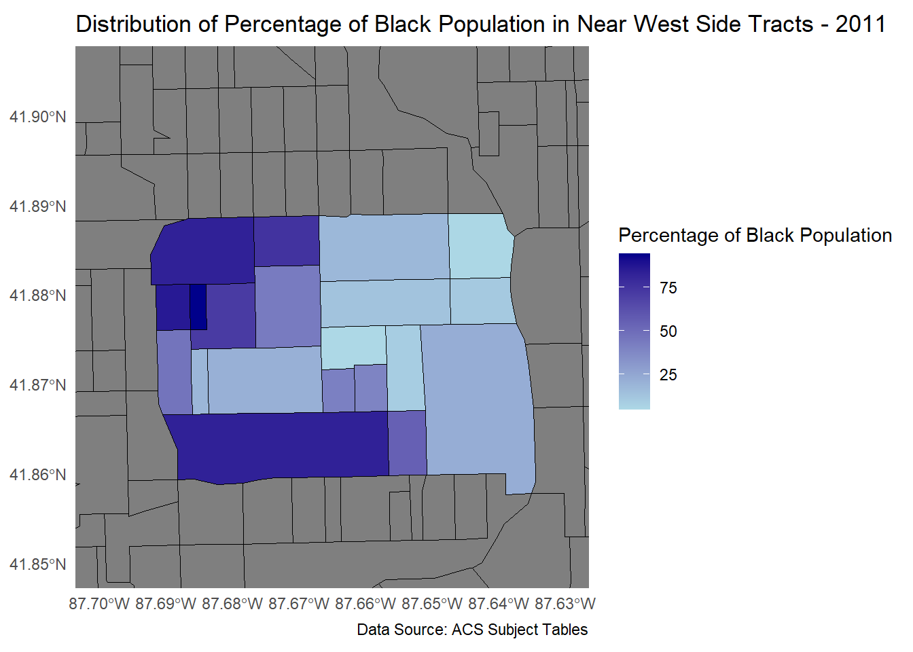
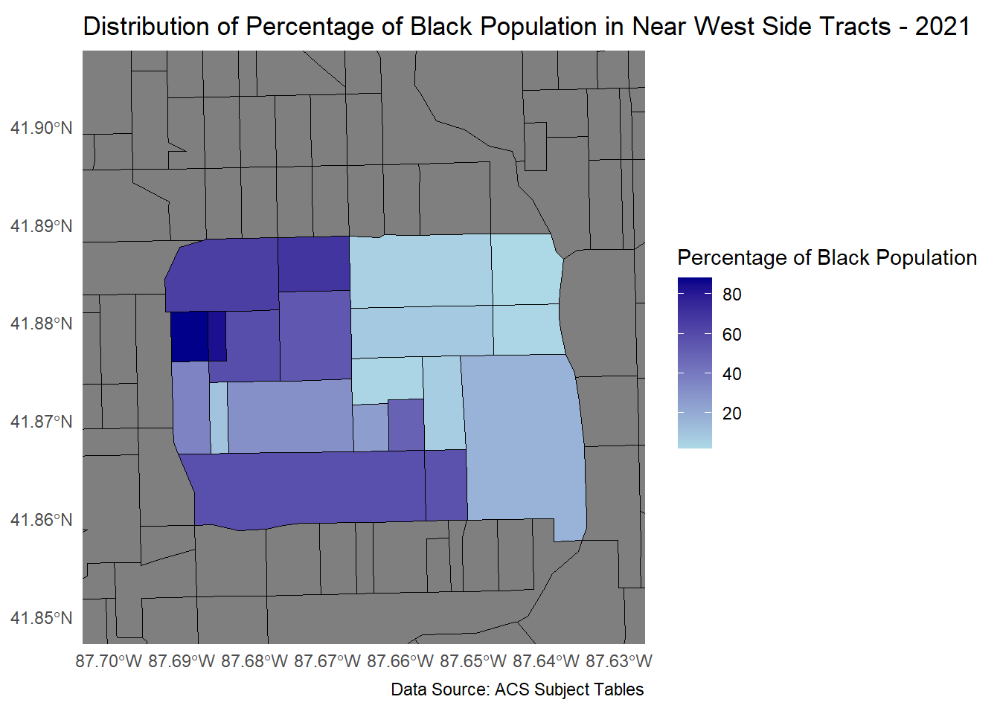
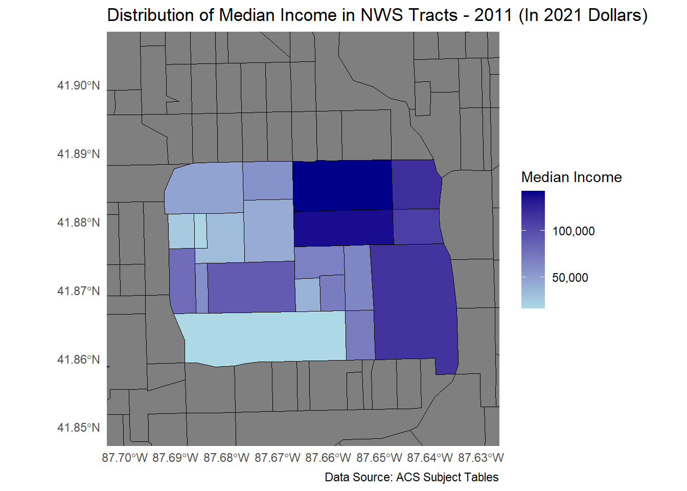
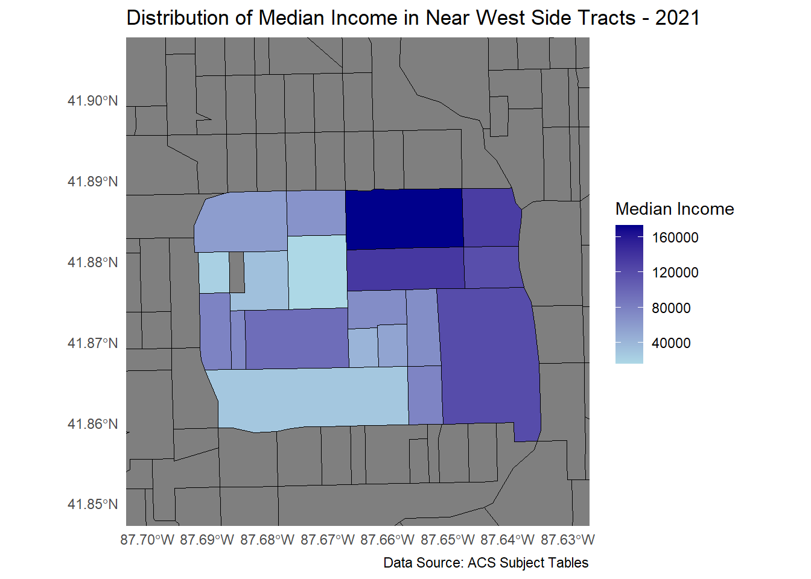

(
(Wholesale trade located itself in the northern expanse of the North West Side in the 1870s and the 1880s. This area was largely composed of four story buildings that each housed several businesses and the area became an employment hub for the city (Chicago Historical Society).
The Near West Side is also famously home to the Hull House, an institution founded by Jane Addams and Ellen Gates Starr, to help immigrants adapt to living in America while upholding cultural diversity as a value. However, Black people were referred to lower quality institutions that served only them (Chicago Historical Society).
Past Issues
The first signs of racial, ethnic, and economic divides were already apparent at the time the city was incorporated in 1837. The neighborhoods first Black settlement appeared in the 1830’s near Lake and Kinzie streets. By the 1870s, the middle class had largely replaced the wealthy elite that used to live there. High levels of European immigration resulted in many Irish and French immigrants as well as Germans and Czechs moving to the Near West Side. After the Chicago Fire, an influx of 200,000 people created crowded conditions (Chicago Historical Society). In the following decades, Jews from eastern Europe called the area around the streets of Maxwell and Halsted home. The Italian community created Little Italy near Polk and Taylor Streets and the Greeks formed the community of Greek Town north of Little Italy. The Hull House was founded during this time to serve the influx of immigrants in the community (Window To The World).
The Great Migration as well as an increase in the number of Mexican immigrants helped to solve some of the labor shortage that the city was facing in the 1930s and 1940s. They also began to replace many of the ethnic European immigrants. Mass displacement due to urban renewal projects including expressway construction and the building of the University of Illinois at Chicago campus in the middle of the century gave rise to the nearby Pilsen neighborhood as a home for a strong Mexican community (Window To The World).
Present Issues
The City of Chicago created one neighborhood-specific plan for the Near West Side in 2000. Greektown is one of the most prominent neighborhoods in the area, largely due to its cultural and historic status as the heart of Chicago’s Greek community. The area is a popular tourist destination due to its architecture, well-kept street, Greek attractions, and easy accees via the CTA Blue Line. It has experienced a surge in growth with new condominiums and businesses. As this is a well-defined community, this subarea can be classified at the neighborhood level, as the area straddles two census blocks (City of Chicago, 2000).
The Randolph and Fulton Market areas are characterized by the city as being two distinct areas on maps while being adjacent to each other. These areas are differentiated by their previous land use as a center for wholesale produce and meatpacking. This area is in the midst of change transitioning from what has historically been an industrial area experiencing issues with deterioration to one that is constructing new housing and experiencing gentrification with the development of a new restaurant row. This area is relavitvely well-defined at the census tract level (City of Chicago, 2000).
Though not included in the aformentioned City of Chicago plan for the Near West Side, Little Italy is another well-defined neighborhood of the city that is unique for having a large Italian community in the city. This area, like Greektown, is experiencing gentrification. The Covid-19 pandemic brought the permanent closure of a few Italian restaurants and has resulted in interest from outside parties on the properties. Expansion of the University of Illinois at Chicago campus as well as Illinois Medical District has brought more outside money into the area, prompting the many of the neighborhood’s longstanding residents to leave. Interest in residential development west of the loop has brought higher rents to the area as well (Alexia Elejalde-Ruiz and Ryan Ori, 2020). The neighborhood level is most appropriate to study this area as is contains multiple census tracts (City of Chicago).
Policy Issues of Note
Gentrification is the clearest policy issue that has been highlighted over the course of this memorandum, having been mentioned twice and impacting two different neighborhoods within the Near West Side. This has led to the displacement of many residents from the Near West Side. The University of Chicago has completed research on gentrification in Chicago using 13 socioeconomic indicators and using this method, have shown that the Near West Side, along with the neighborhoods directly to the east and north have fully gentrified since 1970 (Neighborhood & Community Improvement).
Housing affordability is also another policy issue for consideration. The Near West Side is an economic hub of its own due to the Illinois Medical District and because it is adjacent to the Loop. Because of this, the area has seen an increase in housing and with that has been the construction of housing types that have high up front costs such as condominiums and infill single family homes.This fact combined with a 10.5% increase in the number of people who have a bachelor’s degree or higher would suggest a demand for higher quality housing that demands a higher price, contributing to the housing affordability present in the Near West Side (Chicago Metropolitan Agency for Planning, 2023).
Methods and Approach
The specific problem that I am offering a fractional solution My approach for analysis is retrieving demographic data via the United States Census and analyzing it in R using the tidycensus package along with other packages for mapmaking and tablemaking. This resource is used to provide evidence of gentrification in the Near West Side through demographic indicators and comparing select trends in this neighborhood to what is occurring in the City of Chicago and Cook County. The City of chicago’s city-owned lot database and its opportunity zone map are used to identify opportunity zones that contain city-owned vacant lots for sale that are candidates for mixed use developments that offer affordable housing options. Lots that are contiguous with other lots are desired the most for their increased potential to allow spatially larger developments.
The selected geographic scale is appropriate because it is a well-defined Community Area by the City of Chicago, which uses Community Areas for analysis purposes. Contiguous selections of census tracts form the Community Areas and the Community Areas never divide divide census tracts into two parts. This allows the aggregation of census tract data to neatly define and characterize the Near West Side.
Data Sources
The primary source of my data is from the United States Census and American Community Survey data. This data allows us to understand in numbers and figures how gentrification has impacted the Near West Side specifically in terms of rental costs, income, educational attainment, and by race. This information is providing justification for better housing policies and more affordable housing in the Near West Side.
The City of Chicago’s city-owned lot database and its opportunity zone map are used to identify the presence of opportunity zones in the Near West Side and whether they contain city-owned vacant lots.
Data Description, Analysis, and Interpretation
The analysis I have completed with the data shows both quantitatively and spatially how the racial, educational, and financial characteristics of the Near West Side has changed over the past 20 years to understand to what extent gentrification has impacted the community. Select indicators are compared to the City of Chicago and Cook County. This analysis was completed to serve as justification for policies that would reverse gentrification’s progress and re-integrate the community.
Race & Ethnicity
| Race & Ethnicity | 2007 - 2011 | ||||||||||
|---|---|---|---|---|---|---|---|---|---|---|
| Geography | Non-Hispanic Population | Latinx | Non-Hispanic Population (%) | Latinx | ||||||
| White | Black | Asian | Other | White | Black | Asian | Other | |||
| Near West Side | 22,163 | 16,934 | 6,773 | 1,276 | 4,746 | 42.7% | 32.6% | 13.1% | 2.5% | 9.1% |
| Chicago city, Illinois | 864,688 | 890,947 | 144,528 | 41,275 | 759,303 | 32.0% | 33.0% | 5.4% | 1.5% | 28.1% |
| Cook County, Illinois | 2,284,565 | 1,275,928 | 318,531 | 78,802 | 1,225,143 | 44.1% | 24.6% | 6.1% | 1.5% | 23.6% |
| Race & Ethnicity | 2017 - 2021 | ||||||||||
|---|---|---|---|---|---|---|---|---|---|---|
| Geography | Non-Hispanic Population | Latinx | Non-Hispanic Population (%) | Latinx | ||||||
| White | Black | Asian | Other | White | Black | Asian | Other | |||
| Near West Side | 28,322 | 15,950 | 11,874 | 2,415 | 6,458 | 43.6% | 24.5% | 18.3% | 3.7% | 9.9% |
| Chicago city, Illinois | 907,499 | 788,673 | 185,202 | 72,950 | 787,795 | 33.1% | 28.8% | 6.8% | 2.7% | 28.7% |
| Cook County, Illinois | 2,192,123 | 1,192,435 | 392,743 | 141,148 | 1,346,949 | 41.6% | 22.6% | 7.5% | 2.7% | 25.6% |
Perhaps one of the most visually obvious indicators of gentrification is the racial makeup of the people in the gentrifying area who are typically White. This holds true for the Near West Side where every racial and ethnic group in the table below has experienced an increase except for the Black population, which has decreased 8.1% in the Near West Side over a roughly ten year span. The Black population has been decreasing at the city and county levels, though at a slower rate of 4.2% and 2% respectively. Notably, the proportion of the White population has increased in the Near West Side and city levels while it has decreased at the county level over this time period. The Asian and Latinx populations have increased at all all geographic levels.

Going back further in time to the year 2000, we can see that these trends began even sooner where the Black population (in blue) was experiencing a decline in population at the neighborhood level, validating the description of this trend in the background section.


The two maps above give us a more granular perspective on how gentrification is occurring at the census tract level in the Near West Side. The color represents what percentage of each census tract is Black. It is evident that the Near West Side is segregated almost down the middle from north to south and this trend has intensified over the last ten years. The east half may be becoming less Black because real estate speculation due to its proximity to The Loop has increased new development, resulting in higher land prices.
Educational Attainment
| Near West Side Educational Attainment | ||
|---|---|---|
| Degree | Percentage 2011 | Percentage 2021 |
| Some College (Less Than 1 Year) | 3.3% | 3.3% |
| Some College (1 or More Years) | 9.5% | 7.0% |
| Associate's Degree | 4.9% | 4.1% |
| Bachelor's Degree | 31.8% | 36.2% |
| Master's Degree | 16.2% | 21.6% |
| Professional School Degree | 8.0% | 7.3% |
| PhD | 3.4% | 4.9% |
The table above shows that the population of the Near West Side has become more highly educated. The proportion of all people who have up to an associate’s degree has declined while the proportion of the population that has earned a bachelor’s degree or higher has increased drastically. Most notably, the proportion of the population that now has a bachelor’s degree or master’s degree has increased by 4.4% and 5.4%, respectively.
Poverty
| Geography | Poverty Rate 2007-2011 (%) | Poverty Rate 2017-2021 (%) | Percent Change |
|---|---|---|---|
| Near West Side | 26.3 | 23.2 | 3.1 |
| Chicago city, Illinois | 21.4 | 17.1 | 4.3 |
| Cook County, Illinois | 15.8 | 13.5 | 2.3 |
The Near West Side has experienced a greater reduction in poverty compared to Cook County, though the City of Chicago has experienced the greatest reduction in poverty from 2011-2021. When looking at standalone numbers, we can see that the Near West Side remains the most impoverished compared to the City of Chicago and Cook County. This suggests that despite the gentrification occurring in the community, there is still a sizable population in need of solutions to alleviate their burden.
Rents
tibble [1 × 3] (S3: tbl_df/tbl/data.frame)
$ GEOID : chr "0"
$ NAME : chr "Near West Side"
$ median_rent: num 1164| Geography | 2011 Median Rent ($) | 2021 Median Rent ($) | Percent Change |
|---|---|---|---|
| Near West Side | 1164.5 | 1515 | 30.1% |
| Chicago city, Illinois | 916.0 | 1209 | 31.99% |
| Cook County, Illinois | 932.0 | 1214 | 30.26% |
All geographies analyzed experienced rent increases within 2% of one another, with the Near West Side experiencing the smallest increase of the three. It should be noted that the Near West Side’s rental prices are the highest among the three geographies.
Income


The maps above present another example of widening disparities along racial and financial lines in the Near West Side. We can see that the northeastern tracts have become wealthier from 2011-2021 while the western and southern tracts have experienced a decrease in wealth on the whole. This pattern unveils the extent to which gentrification impacts the Near West Side, highlighting a need for solutions that bring development back to the lower income areas of the neighborhood.
The Policy Proposal
The policy I propose is not a complete answer to the problem of gentrification in the Near West Side, though it is a much needed solution to partially solve the problem of segregation and gentrification in the Near West Side. Using the City of Chicago’s city-owned vacant lot map, we can see that there is a sizable amount of city-owned vacant land in the the Near West Side’s southern region along the 1800 block of West Hastings Street. The census tract this block resides in is also an opportunity zone. The City of Chicago’s city-owned vacant land map indicates that this area is zoned PD30, which is subject to the City of Chicago’s Affordable Requirements Ordinance. (Magana, 2023). According to the City of Chicago’s Affordable Requirements Ordinance, the Illinois Medical District is within a community preservation area (Chicago, 2021). The City of Chicago Department of Planning and Development only uses the PD30 zoning classification for land within the Illinois Medical District (Chicago Department of Planning & Development, 2021). To increase the amount of affordable housing in the Illinois Medical District, I propose amending the PD30 zoning ordinance to go beyond the requirements of the Affordable Requirements Ordinance.


In addition to the above requirements, I propose adding the following requirements to the program:
- At least 20 percent of the project’s units are occupied by tenants with an income of 50 percent or less of area median income adjusted for family size (AMI).
- At least 40 percent of the units are occupied by tenants with an income of 60 percent or less of AMI.
- At least 40 percent of the units are occupied by tenants with income averaging no more than 60 percent of AMI, and no units are occupied by tenants with income greater than 80 percent of AMI.
These requirements are the requirements to be eligible for the Low Income Housing Tax Credit (taxpolicycenterWhatLowIncome?). Adding these requirements to the program would automatically qualify all housing developments for the Low Income Housing Tax Credit.
Low Income Housing Tax Credit
The low-income housing tax credit is a federal subsidy used to finance construction and renovation of affordable housing. The goal of the program at its inception was to incentivize private developers to provide more low-income housing. What makes the low income housing tax credit appealing is that it gives investors a dollar-for-dollar reduction in their federal tax liability if they agree to provide financing for affordable rental housing. The equity contribution of investors subsidizes low-income housing development, allowing some units to rent for below-market rates. Tax credits are then paid to investors as annual allotments, usually over 10 years. Projects that use this financing must meet eligibility requirements for 30 years or more to fulfill their obligations. At the end of this period, the owner still maintains control of the units (taxpolicycenterWhatLowIncome?).
The Internal Revenue Service sets the guidelines and state housing agencies administer the program. The goal of the application process is to award projects to areas where the lowest-income tenants will be served over the longest period. After securing a tax credit from the Low Income Housing Tax Credit program, they must apply for a loan from a private mortgage lender or a public agency. The developer or investor must have some equity involved in the plan as well in order to receive tax credits (taxpolicycenterWhatLowIncome?).
It should be noted that properties that are eligible for the Low Income Housing Tax Credit typically have less debt and lower vacancy rates than market-rate housing. This would ensure more stability for both low-income communities as well as the developers and investors who finance and build the development (taxpolicycenterWhatLowIncome?).
Opportunity Zones
Opportunity Zones are areas in economic distress that are designated as Opportunity Zones to encourage economic growth in low-income areas while giving tax benefits for investors. The program was created under the Tax Cuts and Jobs Act of 2017. Taxpayers can invest in these zones by investing in a Qualified Opportunity Fund.The incentive of investing in a Qualified Opportunity Zone through a Qualified Opportunity Fund is that they can defer tax on the gains they get from the fund (Service, b).
A Qualified Opportunity Fund is set up as a corporation or partnership and must have at least 90% of its assets in Qualified Opportunity Zone property. A Qualified Opportunity Zone property is simply one that lies within an Opportunity Zone. The property owner must derive at least 50% of their gross income from doing business in an Opportunity Zone (Service, a). This would essentially make any housing provider in Chicago eligible for the program if they provide housing in a Qualified Opportunity Zone.
Combining the Low Income Housing Tax Credit with Opportunity Zones
Benefits
The Low-Income Housing Tax Credit provides developers with a 10-year credit on their federal income taxes for creating affordable housing. Combining the program with Opportunity Zones offers greater tax benefits. Combining the two programs works best when the project is a new construction and not the acquirement of an already existing property. This is because it is unlikely that the rehabilitation of a Low Income Housing Tax Credit property would cost more than the amount to acquire a property, which is required for the Opportunity Zones program. Additional investor benefits can accrue from using Housing and Urban Development multifamily loans(Janover, 2023).
Risks
The main risk of using the Low Income Housing Tax Credit in an Opportunity Zone is that the Low Income Housing Tax Credit investors are typically banks, which are not allowed to own equity investments. They therefore do not generate capital gains that would be offset by the Opportunity Zones incentive (Janover, 2023).
Implications
The Illinois Medical District is home to nationally recognized and highly regarded healthcare institutions known for their quality of care and innovations in medicine. This policy would effectively place more low income people closer to these institutions, thereby increasing their access to healthcare. This is vital to reducing health disparities as studies have shown that low-income people have poorer access to health care facilities than more wealthy people (Jingchuan Guo, 2022). Previously illustrated spatial analysis shows that the Opportunity Zone tract that the vacant sites exist within are a declining area over time. Baum-Snow and Marion demonstrate that an upside to new development backed by the Low Income Housing Tax Credit is that it would likely increase housing values in declining neighborhoods (The Effects of Low Income Housing Tax Credit Developments on Neighborhoods — Ncbi.nlm.nih.gov, 2013). This would have positive consequences for residents of this area and offer a means to increase their social mobility if they choose to sell their homes.
Limitations
An increase in property values may result in some displacement of people who were otherwise able to afford to live in the neighborhood. Additionally, the previously mentioned study found that Low Income Housing Tax Credit developments decreased the likelihood of new rental housing construction in gentrifying areas (The Effects of Low Income Housing Tax Credit Developments on Neighborhoods — Ncbi.nlm.nih.gov, 2013). This is a double-edged sword because it would potentially decrease the likelihood of unaffordable market rate housing from being constructed but also decrease the amount of new housing construction overall, contributing to the housing affordability problem. Another limitation of this policy is that it focuses exclusively on housing and not other factors that would increase the wellbeing of this population. Additional policies would be needed to increase the availability of other essential goods and services such as grocery stores and schools. The policy proposal advocated for here does not propose a plan for increasing access to higher paying jobs either via transportation improvements or through job training programs. Additional social policies focusing on these areas are necessary in order to prevent further displacement of the existing low-income community.
Precedence For This Proposal
Cleveland, OH
The city of Cleveland has taken on a similar initiative to build affordable housing on vacant lots as well. The initiative is being lead by Cleveland’s Department of Community Development. The Board of Control worked with four organizations to request architectural drawings. The drawings will function as pre-approved plans for developing housing on vacant land. One developer has even offered their architectural drawings for free in exchange for the right to develop 10 new homes (Vanisko, 2023).
Muskegon, MI
In 2019, the city of Muskegon, Michigan enacted a program to allow redevelopment of vacant residential lots for new homes. The infill program has accounted for 60% of new residential construction in city limits since 2018. The infill has been spatially varied across the city, impacting both poorer and more affluent areas. One city official asserts that the program created a housing market that the private sector was otherwise not encouraging. They also state that the number of the new developments that are owner-occupied is growing as well. The program is financed using Tax Increment Financing to keep the sale prices of the houses in alignment with the areas median income. Without this financing, the cost of a new house would be unattainable to the average prospective homeowner in the area. The program is enabled by the State of Michigan’s 1996 Brownfield Redevelopment Financing Act, which allowed brownfield authorities the ability to redevelop under-invested and vacant properties using Tax Increment Financing (Mieleszko, 2024).
Private developers can take on redevelopment projects though there is an advantage to local governments doing so. Under the act, local governments are reimbursed for any future losses from a project as its property tax value increases. In essence, the local government can recoup any expenses from the program and citizens can buy homes at a reasonable price. The program has resulted in the redevelopment of 143 lots and contracted 61 more as of 2019 (Mieleszko, 2024).
State of Michigan
The Michigan State Housing Development Authority has been giving more weight to applicants seeking housing tax credits whose proposed developments lie within opportunity zones. During the annual 2019 application period, 14 developments were awarded funding from a budget of $13.8 million. Across these developments were 1,000 units of affordable rental housing. To award the money, the state used a qualified allocation plan with a scoring criteria. Applicants were awarded three additional points if their development was within an opportunity zone. Of the 14 developments awarded funding, 13 of them were in opportunity zones (Serlin, 2019).
Evaluation of Precedence
The examples featured highlight a strong desire among communities to find innovative ways to create infill housing that is affordable to their community. Each one either uses a financing tool or creates a new initiative to bring more affordable housing to their community. It should be noted that the Michigan example most closely aligns with the proposed policy here. Policies such as these should be closely evaluated to analyze their effectiveness in delivering the results they’re designed to produce and if there are unintended positive and negative consequences to their communities. Equity-oriented economic and social indicators should be used to evaluate these policies.
Expansion of This Work
The work presented here can be improved on by using additional indicators of gentrification such as vacancy rates and housing burden to get a clearer picture on how to prevent further gentrification of the Near West Side. Spatial analysis of these indicators could allow for more tailored solutions. Further analysis could also include examining the role that land value capture tools could play in providing additional investment to prevent the further gentrifying of areas of the Near West Side while mitigating the risk of these policies harming low-income homeowners and businesses. Other analysis could also include exploring the feasibility of implementing a tax increment financing district on the area to promote development.
Future Research Questions
- To what extent could land value capture tools promote growth and limit gentrification in the Near West Side?
- How does gentrification in surrounding community areas influence neighborhood change in the Near West Side?
- How much money could the establishment of a tax increment financing district in the Near West Side generate depending on different potential future scenarios for the neighborhood?
Conclusion
The tables and maps presented in this analysis demonstrate to what extent gentrification has impacted the Near West Side offering a spatial perspective that cannot otherwise be offered with the use of tabulation of factors alone. The creation of opportunity zones in 2017 offered a new tool in housing advocates’ and developers’ toolboxes to work towards creating affordable housing for everyone. The policy proposed here would ensure that more housing developments have a greater likelihood of accessing Low Income Housing Tax Credit funding in the Near West Side and taking advantage of their existence in an Opportunity Zone. The proposed policy takes advantage of multiple policies designed to increase the supply of affordable housing. This approach can and should be emulated in order to provide new opportunities for affordable housing in the Near West Side.